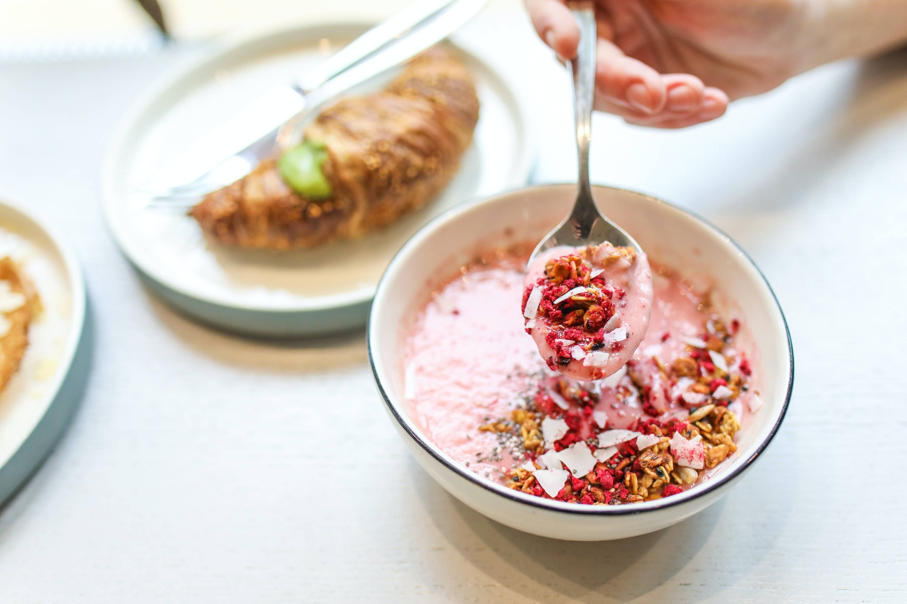
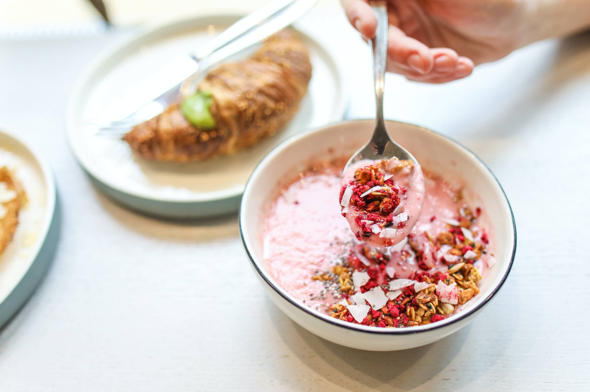

Pollo Asado with Confetti Cauli-Rice
This simple Pollo Asado recipe is my version of the traditional Mexican / Cuban slow-cooked chicken dish, marinated in lots of lime & orange juice, & seasoned with spices such as cumin, coriander, turmeric, paprika, and chili powder. What I love about this recipe is how versatile it is – I've served it here with my Confetti Cauli-Rice, though it would also be delicious in a taco using organic corn tortillas or as a protein on a taco salad, with rice & beans, or with sautéed plantains.
Read More